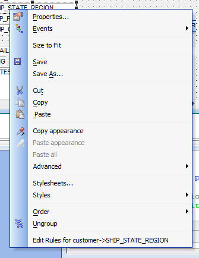
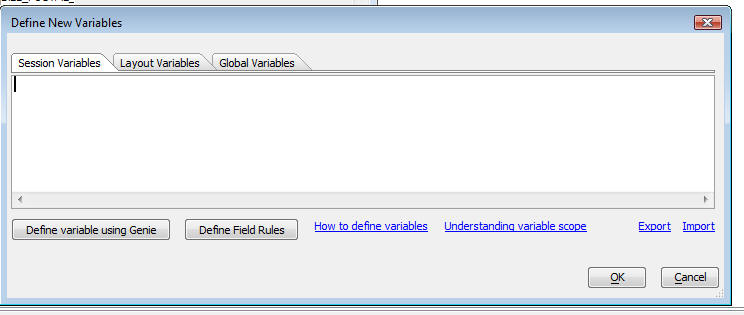
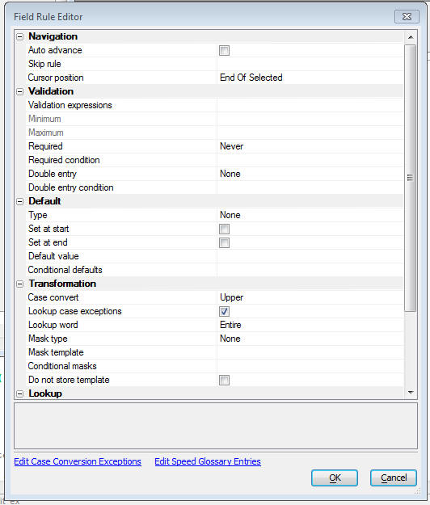

Form Level Field Rules
Alpha Five has always allowed you to define Field Rules for the fields in a table. Now, you can also define Field Rules at the Form Layout level.
When you define Field Rules at the Form level, you can define rules for both fields and variables. Contrast this with Field Rules defined at the Table level - this only allows Field Rules for fields, not variables.
Since you can now define Field Rules for the variables that you place on Form layouts, you can now define validation rules, case conversion rules, lookup rules, minimum and maximum values, etc. for variables without having to write any custom Xbasic code.
When you define a Field Rule for a field at the Form level, if there are also Field Rules for that field defined at the Table level, the rules defined at the two levels are combined into a single set of rules.
To define Field Rules for a field or variable at the Form level, simply right click on the object in the Form editor and select the 'Edit Rules' menu item from the right-click menu.

In the case of Variables, you can also get to the Field Rule editor when you edit variables from the Variables button on the toolbar by clicking the 'Define Field Rules' button:

The Form Level Field Rule editor window is shown below:

You can define all of the standard Field Rule types in the editor.